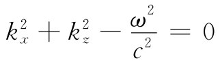

我们将要谈及的下一个问题，初看起来，似乎是一种令人惊奇的现象：如果从同轴线中抽去中心导体，它仍会运载电磁功率。换句话说，在足够高的频率时，一根空管子将工作得如同导线那样好。这与一种神秘的办法有关，即在高频时电容器和电感器所构成的共振电路必须由一个空盒来代替。
尽管当人们把一条传输线当作一种分布式的电感和电容来思考时，或许是一件引人注目之事，但大家都清楚，电磁波可以沿一条中空的金属管道内部通过。如果该管道是笔直的，则还可以通过它看 到东西！因此肯定，电磁波是会通过管子的。但我们也知道，不可能使低频波（电力或电话）从一个单独的金属管内部通过。因此就必然是：若电磁波的波长足够短，才可以从其中通过。我们要来讨论对某一给定大小的管子能够从其中通过的最长波长（或最低频率）的极限情况。由于这时管子是用来载波的，所以它被称为波导 。
我们将从一矩形管开始，因为它是待分析的最简单情况。起初打算给出一种数学处理，以后才回过头来用一种更加基本的办法来考察该问题。然而，这较基本的办法只能轻易地运用到一个矩形导管上去。但对任意形状的一般导管，基本现象都相同，故从根本上来说数学论证基本上更为可靠。
这样，我们的问题就是要找出在矩形管中哪一种波才可以存在。现在先来选取某些方便的坐标，我们选取z轴沿管长方向，而x和y轴则平行于管的两个侧面，如图24-3所示。
图24-3 对矩形波导所选取的坐标
我们知道，当光波沿着管道往下传播时，它们有一横向电场，因此，假定先来寻找垂直于z的、比如说只有一y分量Ey 的那一种解。这一电场在横跨该导管时会有某种变化，事实上，在平行于y轴的两侧壁处它必须为零，因为在一导体中的电流和电荷始终会调整自己使得在导体表面上不会有切向的电场分量。因此，Ey 就将随x以某一拱形变化，如图24-4所示。也许它就是我们对空腔所求出的那种贝塞尔函数？不，因为贝塞尔函数必须是与柱形几何有关的。对于一个矩形的几何形状来说，波通常是简谐函数，因而就应该尝试某种像sinkx x那样的东西。
图24-4 在波导中某一个z值处的电场
既然我们所想要的是沿波导往下传播的波，那就应该期望，当沿z方向行进时场会在正值与负值之间反复变化，如图24-5所示的那样，而这些振动又将以某一速度v沿着波导传播。若我们具有以某个确定频率ω的振动，则会猜测到，该波随z的变化也许会像cos（ωtkz z），或者采用更为方便的数学形式，则像 那样。这一种与z的依存关系表示以速率v=ω/kz 传播的波（见第1卷第29章）。
图24-5 在波导中电场与z的依赖关系
因此，我们也许会猜测，导管里的波可能有如下数学形式：
让我们来看一看这猜测是否满足正确的场方程。首先，电场在导体处不应该有切向分量，我们的场满足这一要求，它垂直于顶面和底面，并在两侧面上为零。噢，若选取kx 使得sinkx x的半周恰好与导管的宽度相符——也就是只要
kx a=π （24.13）
就行，使侧面处的电场为零还有其他一些可能性，比如kx a=2π，3π，…或一般说来，
kx a=nπ， （24.14）
其中n是任一整数。这些就代表场的各种复杂布局，但在目前让我们只考虑最简单的情况，即kx =π/a，其中a为该导管内部的宽度。
其次，在导管内部的自由空间里E的散度必须为零，因为那里并没有电荷。E只有一个y分量，而这一分量并不会随y变化，因而的确有▽·E=0.
最后，电场在导管内部的自由空间里必须与其余的麦克斯韦方程都一致。这与它必须满足下列波方程是同一回事：
我们得看看我们的猜测，即式（24.12）是否很好地起作用。Ey 对x的二次微商正好是 ，对y的二次微商则为零，因为没有东西与y有关。对z的二次微商为 ，而对t的二次微商则为-ω2 Ey 。于是，方程（24.15）表明
除非Ey 处处为零（那并非十分有意义），否则只有下式
 （24.16）
才是正确的。我们已经确定了kx ，因而这个方程就告诉我们，只要kz 与频率ω之间的关系使式（24.16）得到满足——换句话说，只要
（24.17）
就可能有上面所假设的那种类型的波。我们刚才所描述的波以这个kz 值在z方向传播。
对于给定的频率ω，由式（24.17）获得的波数kz 告诉我们波节沿波导往下传播的速率。这个相速度是
（24.18）
你会记得，一个行波的波长是由λ=2πv/ω给出的，因而kz 也就等于2π/λg ，其中λg 是沿z方向的振动波长——即“导管波长”。当然，导管波长与同频率的电磁波在自由空间里的波长是不同的。若把等于2πc/ω的自由空间波长称为λ0 ，则可将式（24.17）写成
除了电场之外，还有磁场也随波传播，但眼前我们将不操心去算出有关磁场方面的那个表示式。由于c2 ▽×B=∂E/∂t，所以B线将围绕那些∂E/∂t值最大的区域旋转，也就是说，将围绕E的极大点与极小点中间的区域旋转。B的回路将平行于xz平面并位于E的峰与谷之间，如图24-6所示。
图24-6 波导中的磁场